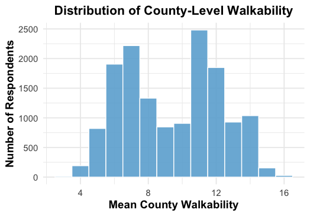

Does The Built Environment Shape the Presence and Degree of Interpersonal Political Interactions?
![]()
Cross-cutting interpersonal interactions have been shown to reduce affective polarization and increase tolerance for different perspectives. And, earlier evidence pointed to the workplace as a particularly effective social setting for fostering these types of social experiences with political difference. However, by many accounts America has grown politically sorted along social, geographical, and lifestyle dimensions, and the Covid-19 pandemic upended many traditional workplace dynamics. These developments lead us ask new questions about where cross-cutting interactions might occur, both in presence and degree. In this paper we look at the relationship between broader built environments and the nature of people’s core and bacquaintance networks. Using items placed on modules of the Cooperative Election Study between 2018 and 2024, we look at how different measures of built environments (including walkability, density, and segregation) relate to the amount of exposure to inpartisans and outpartisans people experience in both their core and acquaintance networks.
Built Environment, Network
Read Me
The purpose of this page is to provide any additional information of context that could not be included in the physical poster for PolNet 2025. Some information is repeated from the poster.
Poster
Data
Below you will find links and further descriptions of the three data sets we use.
National Walkability Index
The National Walkability Index was created in 2019 by the Environmental Protection Agency (EPA). It was a one off project that the EPA does not expect to conduct again. Walkability is measured at the Census block group level. Attached [here] is the official documentation from the EPA for the construction of the walkability index. The index ranges from 1 (lowest walkability) to 20 (highest walkability).
A Census block group is larger than the smallest Census unit (block). A block group contains multiple Census blocks. The Census tract is the aggregation above a Census block group. A Census tract contains multiple block groups. A Census block group typically contains a population of 600 to 3,000 people. More information regarding Census blocks and block groups can be found [here].
While measured at the Census block group, we chose to aggregate this measure to county level. In other sections of the poster and this memo, we have discussed our reasoning for doing so and are aware of the issues with this geographical unit. Since counties are a Census recognized geographical division, census block groups must fit inside a county. In other words, Census block groups cannot overlap other counties. Since each block group has a 12 digit FIPS code, we simply use the first 5 digits (State + County FIPS) to identify which block groups belong to which county. We then simply group these block groups together by common county and average out their walkability score.
We provide the distribution of mean county walkability scores below.

While our measure of walkability was created in 2019, we feel confident in using it for 2022 survey data. We stake our confidence on the simple fact that the built environment does not change rapidly. Construction of just one building can take many years. Our assumption is that between 2019 and 2022, the built environment changes very little. In addition to the simple observation that construction takes considerable time, we also observed construction come to a halt during the Covid-19 pandemic.
Covid States Project Data
From March 2020, the Covid States Project samples individuals across all 50 states with the explicit goal of helping researchers understand the links between social behavior and virus transmission.
We field our module on wave 24 of the Covid States Project, conducted between 08/11/2022 and 09/13/2022. Additional sample augments were used to oversample African American, Asian, and Hispanic respondents.
The initial data set had 15,000+ respondents. After merging and cleaning, we are left with 14,721 valid observations. The data set is unique in that it provides questions related to an individual’s core and acquaintance network.
Identifying Core Network
To identify an individual’s core network, we asked the following:
[alter] For the next few questions, think about the 3 people living outside your household with whom you have the strongest, closest relationship. You can write their initials below to remind yourself who each person is as you answer the following questions.
After identifying three individuals, the respondent was then asked various questions about their relationship with and perception of those individuals.
Identifying Acquaintance Network
To identify an individual;s acquaintance network, we asked the following:
[ard] Think of all of the people that you are acquainted with (meaning that you know their name and would stop and talk at least for a moment if you ran into the person on the street or in a store). How many of these people are you pretty certain have the following attributes?
We provide 23 possible attributes for individuals to describe their acquaintance network.
National Neighborhood Data Archive
To extend our further and better account for local environent features, we include a measure of partisan segregation at the county level. The National Neighborhood Data Archive (NaNDA): Voter Registration, Turnout, and Partisanship by County, United States, 2004-2022 can be sourced [here]. We use the variable, PARTISAN_INDEX_REP: Republican partisanship index (% votes cast, past 6 years) as our measure of partisan segregation. With an actual measure of partisan segregation, we are able to see how the presence of out-partisans can influence individuals’ core and acquaintance network.
Bibliography
Reuse
Citation
@online{neilon2025,
author = {Neilon, Stone and E. Sokhey, Anand and T. Pietryka, Matthew},
title = {Does {The} {Built} {Environment} {Shape} the {Presence} and
{Degree} of {Interpersonal} {Political} {Interactions?}},
date = {2025-08-12},
url = {https://stoneneilon.github.io/research/polnet_2025},
langid = {en},
abstract = {Cross-cutting interpersonal interactions have been shown
to reduce affective polarization and increase tolerance for
different perspectives. And, earlier evidence pointed to the
workplace as a particularly effective social setting for fostering
these types of social experiences with political difference.
However, by many accounts America has grown politically sorted along
social, geographical, and lifestyle dimensions, and the Covid-19
pandemic upended many traditional workplace dynamics. These
developments lead us ask new questions about where cross-cutting
interactions might occur, both in presence and degree. In this paper
we look at the relationship between broader built environments and
the nature of people’s core and bacquaintance networks. Using items
placed on modules of the Cooperative Election Study between 2018 and
2024, we look at how different measures of built environments
(including walkability, density, and segregation) relate to the
amount of exposure to inpartisans and outpartisans people experience
in both their core and acquaintance networks.}
}